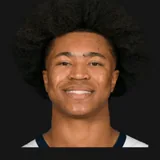

Andreas Glyniadakis
Age
45
born Aug. 26, 1981
NBA seasons
1
2006-07
Games
13
regular season
Per game
1.3
1.3 points · 0.6 rebounds
Life
- Born
- Aug. 26, 1981, in Chania, Greece
- Age
- 45 (as of Nov. 25, 2026)
- Height
- 7'1" (height and lifespan)
Teams
regular-season games| Seattle SuperSonics | 2006-07 | 1 | 13 |
Born the same year (1981)
Also born on August 26

Similar height
Of 33 NBA players within an inch of his height (7'1") born 1976–1986 whose outcome at 45 is known, 97.0% have reached 45. How height and lifespan line up.